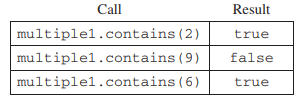

10. AP计算机2015年考试：主观题
I. This question involves reasoning about one-dimensional and two-dimensional arrays of integers. You will write three static methods, all of which are in a single enclosing class, named DiverseArray (not shown). The first method returns the sum of the values of a one-dimensional array; the second method returns an array that represents the sums of the rows of a two-dimensional array; and the third method analyzes row sums.
(a) Write a static method arraySum that calculates and returns the sum of the entries in a specified one-dimensional array. The following example shows an array arr1 and the value returned by a call to arraySum.

Completed method arraySum below.
/** Returns the sum of the entries in the one-dimensional array arr.
*/
public static int arraySum(int[] arr)
(b) Write a static method rowSums that calculates the sums of each of the rows in a given two-dimensional array and returns these sums in a one-dimensional array. The method has one parameter, a two-dimensional array arr2D of int values. The array is in row-major order: arr2D[r][c] is the entry at row r and column c. The method returns a one-dimensional array with one entry for each row of arr2D such that each entry is the sume of the corresponding row in arr2D. As a reminder, each row of a two-dimensional array is a one-dimensional array.
For example, if mat1 is the array represented by the following table, the call rowSums(mat1) returns the array {16, 32, 28, 20}.
Assume that arraySum works as specified, regardless of what you wrote in part (a). You must use arraySum appropriately to receive full credit.
Complete method rowSums below.
/** Returns a one-dimensional array in which the entry at index k is the sum of
* the entries of row k of the two-dimensional array arr2D.
*/
public static int[] rowSums(int[][] arr2D)
(c) A two-dimensional array is diverse if no two of its rows have entries that sum to the same value. In the following examples, the array mat1 is diverse because each row sum is different, but the array mat2 is not diverse because the first and last rows have the same sum.
Write a static method isDiverse that determines whether or not a given two-dimensional array is diverse. The method has one parameter: a two-dimensional array arr2D of int values. The method should return true if all the row sums in the given array are unique; otherwise, it should return false. In the arrays shown above, the call isDiverse(mat1) returns true and the call isDiverse(mat2) return false.
Assume that arraySum and rowSums work as specified, regardless of what you wrote in parts (a) and (b). You must use rowSums appropriately to receive full credit.
Complete method isDiverse below.
/** Returns true if all rows in arr2D have different row sums;
* false otherwise.
*/
public static boolean isDiverse(int[][] arr2D)
II. Consider a guessing game in which a player tries to guess a hidden word. The hidden word contains only capital letters and has a length known to the player. A guess contains only capital letters and has the same length as the hidden word.
After a guess is made, the player is given a hint that is based on a comparison between the hidden word and the guess. Each position in the hint contains a character that corresponds to the letter in the same position in the guess. The following rules determine the characters that appear in the hint.
The HiddenWord class will be used to represent the hidden word in the game. The hidden word is passed to the constructor. The class contains a method, getHint, that takes a guess and produces a hint.
For example, suppose the variable puzzle is declared as follows.
HiddenWord puzzle = new HiddenWord("HARPS");
The following table shows several guesses and the hints that would be produced.
Write the complete HiddenWord class, including any necessary instance variables, its constructor, and the method, getHint, described above. You may assume that the length of the guess is the same as the length of the hidden word.
III. A two-dimensional array of integers in which most elements are zero is called a sparse array. Because most elements have a value of zero, memory can be saved by storing only the non-zero values along with their row and column indexes. The following complete SparseArrayEntry class is used to represent non-zero elements in a sparse array. A SparseArrayEntry object cannot be modified after it has been constructed.
public class SparseArrayEntry
{
/** The row index and column index for this entry in the sparse array */
private int row;
private int col;
/** The value of this entry in the sparse array */
private int value;
/** Constructs a SparseArrayEntry object that represents a sparse array element
* with row index r and column index c, containing value v.
*/
public SparseArrayEntry(int r, int c, int v)
{
row = r;
col = c;
value = v;
}
/** Returns the row index of this sparse array element. */
public int getRow()
{ return row; }
/** Returns the column index of this sparse array element. */
public int getCol()
{ return col; }
/** Returns the value of this sparse array element. */
public int getValue()
{ return value; }
}
The SparseArray class represents a sparse array. It contains a list of SparseArrayEntry objects, each of which represents one of the non-zero elements in the array. The entries representing the non-zero elements are stored in the list in no particular order. Each non-zero element is represented by exactly one entry in the list.
public class SparseArray
{
/** The number of rows and columns in the sparse array. */
private int numRows;
private int numCols;
/** The list of entries representing the non-zero elements of the sparse array. Entries are stored in the
* list in no particular order. Each non-zero element is represented by exactly one entry in the list.
*/
private List<SparseArrayEntry> entries;
/** Constructs an empty SparseArray. */
public SparseArray()
{ entries = new ArrayList<SparseArrayEntry>(); }
/** Returns the number of rows in the sparse array. */
public int getNumRows()
{ return numRows; }
/** Returns the number of columns in the sparse array. */
public int getNumCols()
{ return numCols; }
/** Returns the value of the element at row index row and column index col in the sparse array.
* Precondition: 0 <= row < getNumRows()
* 0 <= col < getNumCols()
*/
public int getValueAt(int row, int col)
{ /* to be implemented in part (a) */ }
/** Removes the column col from the sparse array.
* Precondition: 0 <= col < getNumCols()
*/
public void removeColumn(int col)
{ /* to be implemented in part (b) */ }
// There may be instance variables, constructors, and methods that are not shown.
}
The following table shows an example of a two-dimensional sparse array. Empty cells in the table indicate zero values.
The sample array can be represented by a SparseArray object, sparse, with the following instance variable values. The items in entries are in no particular order; one possible ordering is shown below.
(a) Write the SparseArray method getValueAt. The method returns the value of the sparse array element at a given row and column in the sparse array. If the list entries contains an entry with the specified row and column, the value associated with the entry is returned. If there is no entry in entries corresponding to the specified row and column, 0 is returned.
In the example above, the call sparse.getValueAt(3, 1) would return -9, and sparse.getValueAt(3, 3) would return 0.
Complete method getValueAt below.
/** Returns the value of the element at row index row and column index col in the sparse array.
* Precondition: 0 <= row < getNumRows()
* 0 <= col < getNumCols()
*/
public int getValueAt(int row, int col)
(b) Write the SpareArray method removeColumn. After removing a specified column from a sparse array:
- All entries in the list
entrieswith column indexes matchingcolare removed from the list. - All entries in the list
entrieswith column indexes greater thancolare replaced by entries with column indexes that are decremented by one (moved one column to the left). - The number of columns in the sparse array is adjusted to reflect the column removed.
The sample object sparse from the beginning of the question is repeated for your convenience.
The shaded entries in entries, below, corresponded to the shaded column above.
When sparse has the state shown above, the call sparse.removeColumn(1) could result in sparse having the following values in its instance variables (since entries is in no particular order, it would be equally valid to reverse the order of its two items). The shaded areas below show the changes.
Complete method removeColumn below.
/** Removes the column col from the sparse array.
* Precondition: 0 <= col < getNumCols()
*/
public void removeColumn(int col)
IV. This question involves the design of an interface, writing a class that implements the interface, and writing a method that uses the interface.
(a) A number group represents a group of integers defined in some way. It could be empty, or it could contain one or more integers.
Write an interface named NumberGroup that represents a group of integers. The interface should have a single contains method that determines if a given integer is in the group. For example, if group1 is of type NumberGroup, and it contains only the two numbers -5 and 3, then group1.contains(-5) would return true, and group1.contains(2) would return false.
Write the complete NumberGroup interface. It must have exactly one method.
(b) A range represents a number group that contains all (and only) the integers between a minimum value and a maximum value, inclusive.
Write the Range class, which is a NumberGroup. The Range class represents the group of int values that range from a given minimum value up through a given maximum value, inclusive. For example, the declaration
NumberGroup range1 = new Range(-3, 2);
represents the group of integer values -3, -2, -1, 0, 1, 2.
Write the complete Range class. Include all necessary instance variables and methods as well as a constructor that takes two int parameters. The first parameter represents the minimum value, and the second parameter represents the maximum value of the range. You may assume that the minimum is less than or equal to the maximum.
(c) The MultipleGroups class (not shown) represents a collection of NumberGroup objects and is a NumberGroup. The MultipleGroups class stores the number groups in the instance variable groupList (shown below), which is initialized in the constructor.
private List<NumberGroup> groupList;
Write the MultipleGroups method contains. The method takes an integer and returns true if and only if the integer is contained in one or more of the number groups in groupList.
For example, suppose multiple1 has been declared as an instance of MultipleGroups and consists of the three ranges created by the calls new Rang(5, 8), newRange(10, 12), and newRange(1, 6). The following table shows the results of several calls to contains.

Complete method contains below.
/** Returns true if at least one of the number groups in this multiple group contains num;
* false otherwise.
*/
public boolean contains(int num)